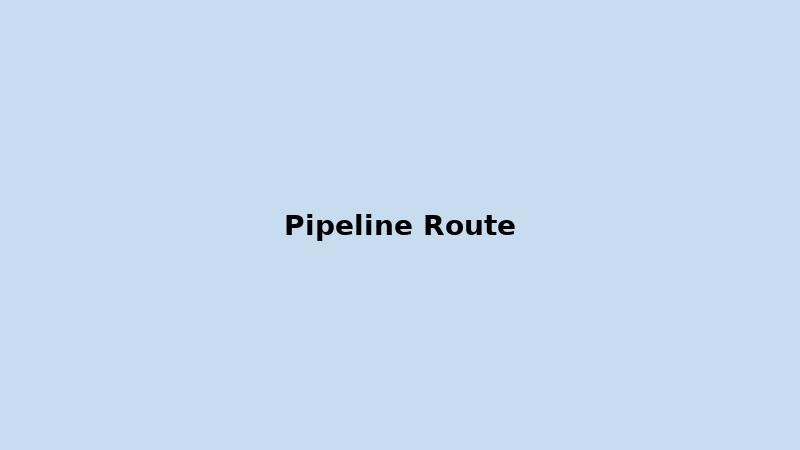

Pipeline
The proposed pipeline route runs ~135 kilometers from Cranberry Junction to Stewart, primarily along Highway 37/37A and the Northwest Transmission Line corridor. This minimizes environmental disruption and simplifies construction.
